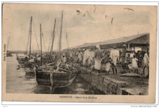

 La douane dans sa représentation juridique actuelle est le fruit de la mise en application de la loi 102/AN/5ème L d’avril 2005. Elle se nomme désormais Direction des douanes et des droits indirectes contrairement à ce qui prévalait jusqu’ici à savoir: Sous- Direction deLa douane dans sa représentation juridique actuelle est le fruit de la mise en application de la loi 102/AN/5ème L d’avril 2005. Elle se nomme désormais Direction des douanes et des droits indirectes contrairement à ce qui prévalait jusqu’ici à savoir: Sous- Directions Recettes Indirectes dépendant de la Direction des Recettes et des Domaines qui a été supprimée par ladite loi.
En 1956, sous le gouvernement de PIERRE MANDES FRANCE (IVème République Française), les territoires d’outre mer ont été appelés à lever des impôts indirects sur leur territoire pour financer leurs économies. Ainsi, à Djibouti, le premier code général des impôts a vu le jour qui a la Taxe Intérieure de Consommation (TIC)....)
Soyez les bienvenus dans le service douanier !